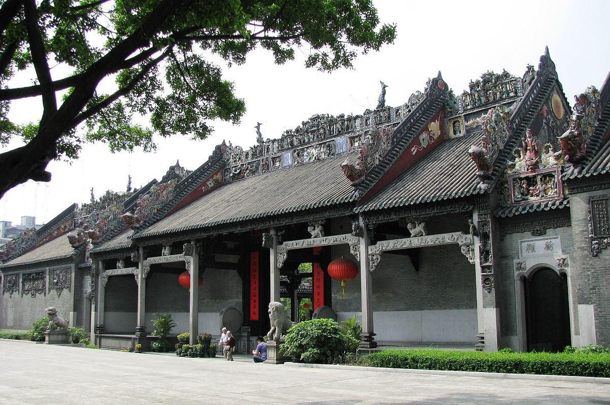
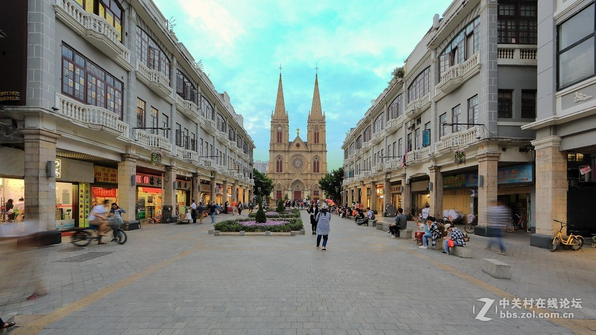
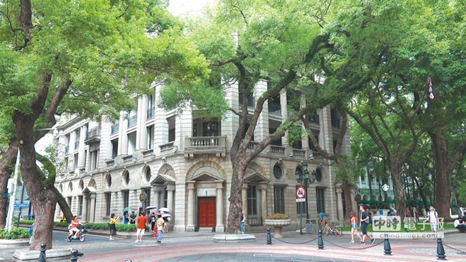
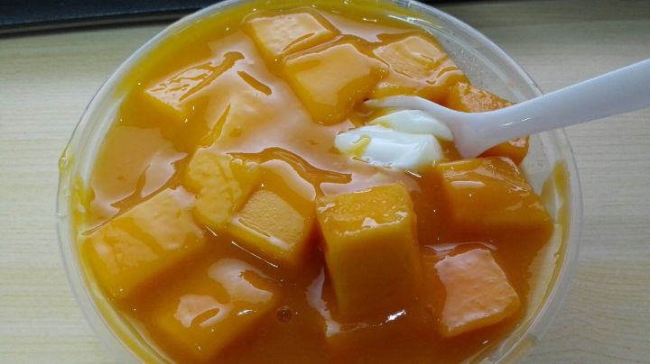
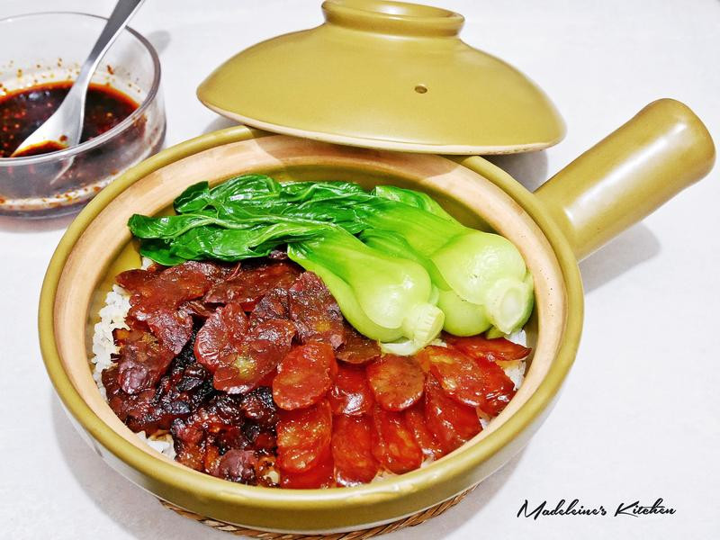

Les places de Guangzhou
-

- Chen Clan Ancestral Hall
- Cathédrale du Sacré-cœur de Jésus
- L'Île de Shamian
Traduit de l'anglais-Le Chen Clan Ancestral Hall est un temple académique de Guangzhou, en Chine, construit par les 72 clans Chen pour l'hébergement de leurs juniors et leur préparation aux examens impériaux de 1894 sous la dynastie Qing. Plus tard, on a changé pour devenir le collège du clan Chen, puis les collèges.Wikipédia

La cathédrale du Sacré-Cœur est située sur Yide Road, à Guangzhou, en Chine, et est l'une des cathédrales du diocèse catholique de Guangzhou. L'église a été construite en 1863 et a été achevée en 1888 et a duré 25 ans. Étant donné que tous les murs et les piliers de l’église sont en pierre de granit, on l’appelle également salle de pierre ou salle de pierre, église du Sacré-Cœur et église catholique de Stone Chamber.

L'Île de Shamian est une île de 24 000 m² située sur la Rivière des Perles, dans le centre-ouest de Canton en Chine. Elle fut entre la moitié du XIXᵉ siècle et celle du XXᵉ siècle une concession franco-britannique.Wikipédia
Les nourritures de Guangzhou
- Yum cha
- Lait double peau de mangue
- Baozai riz

Traduit de l'anglais-Yum cha, également connu sous le nom de dim sum, est la tradition du brunch cantonais qui comprend du thé chinois et du dim sum. Cette pratique est populaire dans les régions cantonaises, notamment le Guangdong, le Guangxi, Hong Kong et Macao.Wikipédia (anglais)

Dès les années 30 du siècle dernier, les cantonais avaient déjà mangé les desserts haut de gamme et de petite bourgeoisie, les plus classiques mentionnant le lait double peau.

Le riz claypot, également appelé riz ondulé, est un aliment de spécialité originaire de la région de Guangzhou, dans la province du Guangdong, et fait partie de la cuisine cantonaise. Les principaux types sont le riz claypot style bacon, le poulet aromatisé aux champignons, les côtes de cardamome, le pot en argile, le foie de porc, le canard rôti, le poulet blanc, etc.